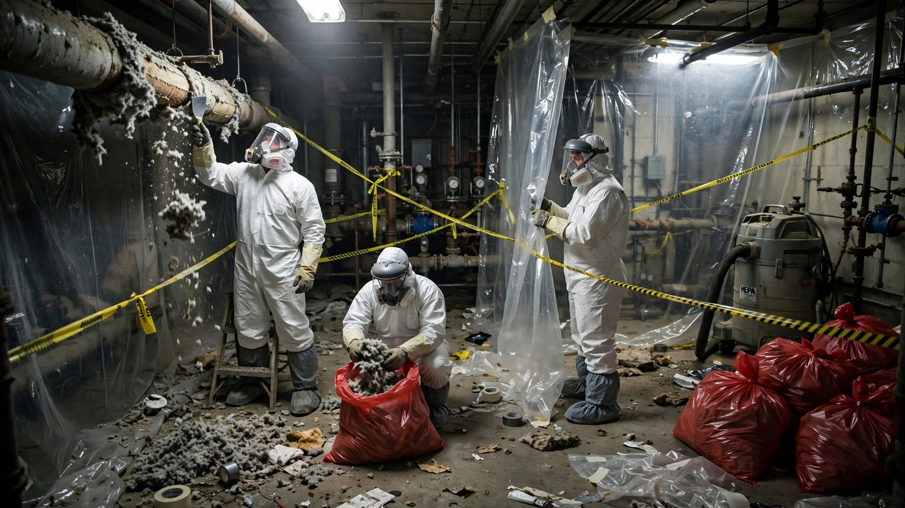

Asbestos Abatement Project Compliance and Workflow SaaS
One in five commercial buildings in the United States still contains asbestos. The $1 billion industry that removes it operates across 50 different state regulatory regimes, each with its own notification forms, licensing requirements, disposal rules, and penalty structures. A single missed NESHAP notification can halt a $2 million demolition project for 10 working days. A willful OSHA violation can cost $165,514. And the 5,000 abatement contractors managing this compliance load do it with paper forms, spreadsheets, and filing cabinets.

The Problem
Asbestos abatement is not a discretionary service. When a building owner discovers asbestos-containing material during a renovation, they cannot proceed until it is removed by a licensed contractor following a regulatory sequence that has not changed in its fundamental structure since the EPA finalized the Asbestos NESHAP (National Emission Standards for Hazardous Air Pollutants) under 40 CFR Part 61, Subpart M in 1990. Every abatement project, whether it involves stripping pipe insulation from a boiler room or removing floor tile from a school gymnasium, follows the same compliance arc: inspect, notify, contain, remove, monitor, dispose, document, close out.
The U.S. asbestos abatement services market was valued at $1.003 billion in 2024 and is projected to reach $1.52 billion by 2031, growing at a 6.2% CAGR, according to The Insight Partners. The industry employs approximately 94,000 workers across roughly 5,000 businesses, per Siteline's analysis of industry data. About 20% of commercial buildings constructed before 1980 still contain asbestos in some form, which means every major renovation or demolition of a mid-century office building, school, hospital, or industrial facility is likely to trigger an abatement project.
The compliance burden on abatement contractors is extraordinary, not because any single regulation is unreasonable, but because the requirements come from multiple agencies at multiple levels of government, and every project requires navigating them simultaneously:
Federal NESHAP notification: Before any demolition or renovation involving regulated quantities of asbestos-containing material (260 linear feet on pipes, 160 square feet on other surfaces, or 35 cubic feet off facility components), the owner or operator must submit written notification to the designated NESHAP agency at least 10 working days before work begins. For demolitions, notification is required even when no asbestos is present. The notification form requires detailed information about the facility, the type and quantity of asbestos, the scheduled removal dates, the disposal site, and the abatement methods to be used.
State-specific requirements: Many states have delegated NESHAP authority to state or local agencies, each of which has its own notification form, fee schedule, and supplemental requirements. Texas requires notification through the Department of State Health Services using a combined NESHAP/TAHPR form. Arizona routes notifications through ADEQ for 12 counties but defers to Maricopa, Pinal, and Pima counties for their own programs, each with separate fees. New York City has its own Department of Environmental Protection asbestos regulations (ACP-5 and ACP-7 forms) layered on top of state requirements. A multi-state contractor working in California, Texas, and New York is filing three different sets of forms with three different agencies under three different fee structures for functionally identical regulatory requirements.
OSHA worker protection: The construction industry asbestos standard (29 CFR 1926.1101) mandates exposure monitoring, medical surveillance, respiratory protection, and recordkeeping for every worker in an asbestos environment. Violations are among the most frequently cited in construction: OSHA recorded 14 asbestos-specific citations in the foundation and building exterior contractor sector alone in recent inspection data, with penalties reaching $21,523 across just 5 inspections. Willful violations can reach $165,514 per citation as of January 2026.
Waste disposal documentation: All asbestos waste must be transported to approved landfills with proper manifests. The generator (typically the abatement contractor) must maintain waste shipment records for at least two years. The landfill sends back a signed receipt. If the receipt doesn't come back within 45 days, the contractor must file an exception report with the EPA regional office. Every bag of asbestos waste is supposed to be labeled, documented, and traceable from the building to the landfill cell.
Today, most contractors manage this compliance arc with a combination of paper forms, PDFs downloaded from state agency websites, Excel spreadsheets for project tracking, and filing cabinets for retention. The project manager's job is 40% regulatory paperwork and 60% actual abatement supervision. The paperwork percentage goes up for multi-state operators and for contractors bidding on federal or institutional work where documentation requirements are even more stringent.
The Gap in the Market
The asbestos abatement software landscape is split between building owner tools and generic construction platforms, with nothing purpose-built for the contractor's compliance-heavy project workflow.
| Company | What They Do | What's Missing |
|---|---|---|
| Ecesis | Cloud-based asbestos management software for building owners and facility managers. Tracks material inventories, sample results, condition assessments, and AHERA reinspection schedules. Mobile survey app. Generates asbestos registers and management plans. | Designed for the owner's side of the equation: "where is the asbestos in my buildings?" It does not handle the contractor's workflow: bidding, NESHAP notification generation, state-specific regulatory routing, air monitoring data ingestion, waste manifest tracking, or worker exposure documentation. An abatement contractor using Ecesis would still need paper forms for everything that matters to their business. |
| FieldFlō | Cloud construction project management platform adapted for abatement and demolition contractors. Offers scheduling, time tracking, safety management, job costing, CRM, and document management. Positions itself as "asbestos abatement management software." | Generic construction PM with an abatement marketing wrapper. Handles scheduling and job costing, but has no regulatory intelligence: it doesn't know which state you're filing in, doesn't generate NESHAP notifications, doesn't track the 10-working-day countdown, doesn't integrate air monitoring data, and doesn't manage waste manifests. It's a better spreadsheet, not a compliance engine. |
| Vision Pro Software | UK-based cloud platform for asbestos register management. Building-floor-room hierarchy, survey data, risk ratings, inspection tracking, audit trails. Primarily serves UK duty holders under Control of Asbestos Regulations 2012. | UK regulatory framework, not US. No NESHAP/OSHA compliance. No contractor project management. Useful for British property managers, irrelevant to American abatement contractors. |
| Bolster Systems | UK/Australia-focused asbestos compliance software for building owners. Centralized data management, automated compliance tracking, inspection scheduling, risk assessment. | Same as Vision Pro: wrong regulatory framework for the US market. Building owner tool, not contractor tool. No project workflow, no notification management, no waste tracking. |
| Procore / generic construction PM | Enterprise construction management platforms used by some larger abatement contractors. Project management, document management, RFIs, submittals, change orders. | Not built for regulated abatement work. No asbestos-specific compliance modules. No NESHAP notification templates. No air monitoring integration. Using Procore for asbestos compliance is like using Salesforce to track FDA drug trials: the data model is fundamentally wrong for the regulatory requirements. |
| EHS platforms (VelocityEHS, Cority, Intelex) | Enterprise environmental, health, and safety platforms. Incident management, compliance tracking, risk assessment. Some have asbestos modules as part of broader industrial hygiene suites. | Priced for Fortune 500 industrial companies ($100K+/year), not for 5-15 person abatement contractors. The asbestos modules are designed for owners managing asbestos in their own facilities, not for contractors running 50+ abatement projects per year across multiple states. Implementation takes months. The smallest abatement contractors can't afford them; the mid-size ones can't justify the overhead. |
The result is a market where the people who actually remove asbestos from buildings have the worst tools for managing the regulatory requirements that govern their work. Building owners have Ecesis. British property managers have Vision Pro. Fortune 500 manufacturers have VelocityEHS. The 5,000 US abatement contractors pulling pipe wrap out of boiler rooms have paper forms and a prayer that they filed the right notification with the right agency 10 working days ago.
The Solution
A vertical SaaS platform built specifically for asbestos abatement contractors, solving the compliance workflow from project intake through closeout documentation.
1. Multi-state NESHAP notification engine ($79/month per company base): The platform maintains a database of every state and local NESHAP-delegated agency in the country, including their specific notification forms, fee schedules, submission methods (mail, email, online portal), and supplemental requirements. When a contractor creates a new project, they enter the project address and the system automatically identifies the jurisdictional NESHAP agency, loads the correct form template, pre-populates it from project data, calculates the 10-working-day countdown based on the planned start date, and generates the complete notification package. For multi-state operators, this alone eliminates the most common compliance failure: filing the wrong form with the wrong agency or missing the notification deadline.
2. Project compliance timeline and checklist ($29/project): Each project gets an automated compliance timeline showing every regulatory milestone: NESHAP notification filed, 10-day waiting period, pre-abatement inspection, containment verification, daily air monitoring, clearance testing, waste manifest generation, disposal confirmation, and project closeout. The system tracks each milestone against the actual project schedule and flags any gaps. If a waste manifest receipt hasn't been returned within 35 days (10 days before the 45-day exception report deadline), the system alerts the project manager. If an air monitoring result exceeds the OSHA permissible exposure limit (0.1 f/cc as an 8-hour TWA), it flags the project for immediate review.
3. Air monitoring data integration ($19/month per company add-on): Abatement projects require air monitoring during removal and clearance sampling after removal. The results come from industrial hygiene laboratories in PDF reports that get filed in project folders. The platform provides a structured upload workflow: import lab results (PDF parsing or manual entry), link them to specific project locations and dates, flag any results above action levels, and generate clearance documentation packages that building owners and their consultants can review without requesting individual PDFs from the contractor. For contractors who subcontract air monitoring to third-party industrial hygienists, the platform provides a secure upload portal where the IH firm can submit results directly.
4. Worker exposure and medical surveillance tracking ($9/worker/month): OSHA 1926.1101 requires initial and periodic exposure monitoring for workers in regulated asbestos areas, plus medical surveillance including chest X-rays and pulmonary function tests. Training certifications (EPA AHERA accreditation, state-specific licenses) have expiration dates. Respirator fit test records must be current. The platform tracks all of this per worker, alerts when certifications are approaching expiration, generates the training matrix that OSHA inspectors ask for during site visits, and produces the exposure history documentation that workers may need decades later if they develop asbestos-related disease.
5. Waste manifest generation and tracking ($0.50/manifest): Every asbestos waste shipment requires a manifest documenting the generator, transporter, and receiving facility. The platform generates waste manifests pre-populated from project data, tracks shipment status, and monitors for return receipts from disposal facilities. When a receipt is missing past 35 days, it auto-generates the exception report template. For contractors disposing at multiple landfills across different states, the platform maintains a database of approved asbestos disposal facilities with current acceptance status, tipping fees, and hours of operation.
6. Bid intelligence and project costing ($49/month per company add-on): Most abatement contractors bid jobs based on gut feel and historical experience. The platform aggregates anonymized project cost data across its user base (with explicit opt-in) to provide benchmarking: cost per square foot for floor tile removal, cost per linear foot for pipe insulation, cost per cubic foot for spray-applied fireproofing, by region, building type, and project complexity. This helps small contractors avoid underbidding projects where regulatory complexity will eat their margin, and helps growing contractors price competitively when entering new geographic markets.
The Math: What Bad Compliance Actually Costs
Consider a mid-size abatement contractor in the Northeast running 60 projects per year across three states (New York, New Jersey, Connecticut), with 25 field workers and $4.2 million in annual revenue.
Scenario A: Paper-based compliance (status quo)
The company employs one full-time office administrator ($55,000/year) dedicated to regulatory paperwork: downloading state notification forms, filling them out from project specs, mailing or uploading them to the correct agency, tracking the 10-day waiting periods on a wall calendar, maintaining worker certification files in filing cabinets, and chasing waste manifest receipts. The project managers spend an estimated 8 hours per project (480 hours/year) on compliance documentation rather than supervising abatement work. At an average PM billing rate of $85/hour, that's $40,800 in lost productive capacity. Compliance failures cost the company an average of $18,000/year in project delays (missed notification deadlines that push start dates), $12,000 in refiled notifications and penalty fees, and one serious OSHA citation every three years averaging $16,550, amortized to $5,517/year. Total annual compliance cost: $131,317.
Scenario B: Platform-enabled compliance
The NESHAP notification engine eliminates the administrator's form-selection and filing work, reducing the role to 60% of current hours (saving $22,000/year or allowing reallocation to business development). Project managers spend 3 hours per project on compliance instead of 8, recovering 300 hours/year at $85/hour ($25,500). Notification deadline violations drop to zero because the system tracks the 10-working-day countdown automatically ($18,000 saved in delays). Refiling costs drop by 80% ($9,600 saved). The OSHA citation probability drops because worker certifications never lapse and exposure records are always current (estimated $4,000/year in avoided penalties). Total annual savings: $79,100.
Platform cost for this contractor: Base ($79/month) + 60 projects ($29 × 60 = $1,740) + air monitoring ($19/month) + 25 workers ($9 × 25/month = $225/month) + waste manifests (~180 at $0.50 = $90) + bid intelligence ($49/month) = approximately $6,306/year. ROI: 12.5x.
Revenue Model
| Revenue Stream | Amount | Notes |
|---|---|---|
| Platform base (per company/month) | $79 | Multi-state NESHAP notification engine, regulatory database, company dashboard. Core product. |
| Project compliance module (per project) | $29 | Automated compliance timeline, checklist tracking, milestone alerts, closeout documentation. |
| Air monitoring integration (per company/month) | $19 | Lab result upload, parsing, clearance documentation generation. Add-on. |
| Worker tracking (per worker/month) | $9 | Certification expiration tracking, exposure history, training matrix, medical surveillance scheduling. |
| Waste manifest generation (per manifest) | $0.50 | Pre-populated manifests, shipment tracking, exception report automation. |
| Bid intelligence (per company/month) | $49 | Anonymized project cost benchmarking by region, material type, building class. Phase 2. |
Unit economics on a 25-worker contractor running 60 projects/year: Annual SaaS: $79 × 12 + $29 × 60 + $19 × 12 + $9 × 25 × 12 + $0.50 × 180 + $49 × 12 = $948 + $1,740 + $228 + $2,700 + $90 + $588 = $6,294. Customer acquisition cost via trade shows (Environmental Information Association conference, ASTM asbestos committees, state contractor association meetings) and direct sales: approximately $4,000. Lifetime value at 5-year average retention: $31,470. LTV:CAC: 7.9x. At 3-year conservative retention: $18,882 / $4,000 = 4.7x.
Market Size
TAM: Approximately 5,000 abatement and remediation businesses operate in the US, per Siteline's industry analysis. Not all are pure-play asbestos contractors; the count includes lead abatement, mold remediation, and environmental cleanup firms. Estimating 3,500 with meaningful asbestos abatement operations, at an average blended revenue per customer of $5,500/year (weighted toward smaller firms with fewer projects and workers): $5,500 × 3,500 = $19.3M/year in SaaS revenue. Adding bid intelligence adoption at 30% and premium tiers for large multi-state operators: approximately $28M total addressable.
SAM: Focus on the top 15 states by abatement project volume: New York, California, Texas, Pennsylvania, New Jersey, Illinois, Ohio, Massachusetts, Connecticut, Florida, Michigan, Maryland, Virginia, Washington, and Colorado. These states account for an estimated 65-70% of abatement activity. Approximately 2,300 contractors in these states. At blended $5,500/year: $12.7M/year.
SOM (year 3): 180 contractors averaging 18 workers and 45 projects/year, concentrated in the Northeast and California. At blended $5,200/year (some without all add-ons): $936K ARR. 7.4% penetration of SAM. Growth to $3M+ ARR in year 5 through geographic expansion and the bid intelligence network effect (more data makes the benchmarking more valuable, which attracts more contractors).
Why Now
The Infrastructure Investment and Jobs Act is funding demolition of old buildings at unprecedented scale. The IIJA allocated $5.4 billion to cleanup and revitalization, including $3.5 billion for Superfund sites and $1.5 billion for brownfields. Many of these sites involve structures built in the 1940s-1970s, the peak decades for asbestos use in construction. The EPA's brownfields program alone funds planning, construction, and operation across 350+ programs. Every brownfield redevelopment that involves demolishing a mid-century industrial building is likely to trigger an asbestos abatement project, and every one of those projects requires the full NESHAP notification and documentation workflow.
EPA's first comprehensive asbestos ban since 1989 signals permanently heightened regulatory attention. On March 28, 2024, EPA finalized a rule under TSCA Section 6(a) banning chrysotile asbestos, the first such ban since the 1989 rule that was largely vacated by the Fifth Circuit in Corrosion Proof Fittings v. EPA (1991). The 2024 ban covers manufacturing, processing, distribution, and commercial use. While the ban itself applies to new asbestos products rather than existing building materials, it signals that EPA is using its post-2016 TSCA authority aggressively on asbestos. Abatement contractors should expect more inspections, more enforcement actions, and tighter documentation scrutiny. The contractors with digital compliance records accessible in minutes will fare better than those rifling through filing cabinets.
OSHA penalties have risen 38% since 2020 through inflation adjustments. The maximum willful violation penalty increased from $136,532 in 2020 to $165,514 in 2026. Even serious violations now carry maximums of $16,550 each, and asbestos remains one of the most frequently cited substances in construction inspections. At these penalty levels, a single inspection finding three serious violations ($49,650) costs more than a decade of platform subscription for a mid-size contractor. The economic case for compliance automation is now self-evident, which was less true when penalties were lower.
The workforce is aging out and taking institutional knowledge with them. The 94,000 workers in the abatement industry include a generation of project managers who learned the regulatory patchwork through decades of experience. They know that New York City requires an ACP-5 filing on top of the state NESHAP notification, that California air districts have different notification thresholds than the federal standard, that certain landfills in New Jersey stopped accepting asbestos waste in 2023. As these managers retire, their successors inherit the compliance responsibilities without the institutional memory. A software platform that encodes this regulatory knowledge into workflow automation ensures that a 28-year-old project manager with three years of experience can navigate multi-state compliance with the same proficiency as a 55-year-old veteran who's been doing it since 1995.
Startup Costs
| Category | Cost | Notes |
|---|---|---|
| Regulatory database compilation (50 states + major metro jurisdictions) | $95K | Research and digitize NESHAP notification requirements, forms, agencies, fee schedules, and supplemental rules for every US jurisdiction. Requires paralegal-level research across ~80 jurisdictional authorities. Ongoing maintenance as regulations change. |
| Web platform + mobile app (8 months) | $280K | 2 backend engineers + 1 frontend + 1 mobile developer. NESHAP notification engine, project compliance timeline, worker tracking, waste manifest module, lab result upload/parsing. |
| Air monitoring data parsing | $40K | PDF parsing engine for common industrial hygiene lab report formats (EMSL, Forensic Analytical, ALS Environmental). Semi-structured extraction of sample results, method, detection limits. |
| Legal review of compliance automation | $30K | Ensure auto-generated notifications meet regulatory requirements across jurisdictions. Disclaimer framework for regulatory advice vs. software automation. |
| Pilot program (20 contractors, 6 months) | $20K | Free platform access for 20 contractors across New York, New Jersey, and California. Dedicated onboarding support, feedback integration, case study rights. |
| Trade show presence and direct sales (year 1) | $35K | Environmental Information Association annual conference, ASTM Committee D22 (Air Quality) meetings, state contractor association events in target states. Booth, travel, demos. |
| Operating buffer (12 months) | $25K | Cloud hosting (AWS), data updates, customer support, regulatory monitoring for database currency. |
| Total | $525K |
Limitations
The 5,000-business count comes from Siteline's analysis of ENR, GC Magazine, and Procore Network data. It includes all abatement and remediation contractors, not just asbestos specialists. Some firms in this count primarily do mold remediation or lead abatement with minimal asbestos work. The 3,500 estimate of firms with meaningful asbestos operations is the author's adjustment based on industry association membership data and state licensing databases, not a rigorous census.
The compliance cost savings in the scenario analysis assume a contractor whose current processes are paper-based. Some larger contractors (50+ workers) already use FieldFlō or adapted Procore instances that provide partial coverage of the workflow. Their incremental savings from switching to a purpose-built platform would be smaller, though the regulatory intelligence (multi-state NESHAP routing) would still provide value that generic platforms lack.
The regulatory database requires ongoing maintenance as state agencies update their forms, fee schedules, and submission requirements. This is not a one-time build. Budget approximately $35K-50K per year in paralegal and engineering time to keep the database current across 80+ jurisdictions. If the database falls out of date, the core value proposition collapses. This ongoing cost compresses margins and requires discipline that many early-stage SaaS companies underestimate.
The bid intelligence module depends on sufficient adoption to generate meaningful benchmarking data. In year 1, with 40-60 customers, the data set will be too thin to produce useful regional benchmarks. This module should launch only after reaching 150+ customers, probably year 3, to avoid shipping a feature that disappoints early adopters.
Strongest Counterargument
State environmental agencies could digitize their own notification systems and eliminate the compliance friction that creates this product's value. Several states have already moved NESHAP notifications online: Colorado uses an electronic submission system, and some California air districts accept email submissions. If all 50 states standardized on electronic notification with common data fields, the multi-state routing engine that constitutes this product's core value would become unnecessary. A contractor filing online in New York and online in California doesn't need a third-party platform to tell them which form to use.
The counterargument to the counterargument: state environmental agencies have been moving at geological speed on digital transformation. The EPA published the current NESHAP notification requirements in 1990. Thirty-six years later, most states still require paper or PDF forms submitted by mail or fax. Nebraska's guidance document still references "postmarking" the notification. Texas uses a PDF form that must be printed, signed, and mailed to Austin. Arizona splits jurisdiction across ADEQ and three county agencies with separate processes. The idea that 50 states and 80+ delegated agencies will simultaneously standardize on electronic notification is the kind of prediction that sounds reasonable and has a 0% chance of happening in the next decade. Environmental regulatory IT budgets are measured in hundreds of thousands, not millions, and asbestos notification digitization is nobody's top priority. The regulatory patchwork is the moat, and the moat is getting deeper, not shallower. Every year that passes without standardization makes the aggregation layer more valuable.
What You Can Do
If you're an abatement contractor: Start by digitizing your notification tracking today, even without specialized software. Create a shared spreadsheet with columns for: project name, jurisdiction, NESHAP agency, notification date, 10-working-day clearance date, project start date, and status. Color-code projects in the waiting period red. This simple step catches the most common compliance failure (starting work before the waiting period expires) and costs nothing. For worker certifications, create a separate spreadsheet listing every worker's EPA accreditation, state licenses, and respirator fit test dates, with conditional formatting that turns cells yellow 60 days before expiration and red at expiration. If you operate in more than two states, the time you spend on form selection and filing is likely 15-20 hours per month. Track it for one quarter. That number is your business case for automation.
If you're a building owner or facility manager planning renovation: Ask your abatement contractor how they track NESHAP notifications and waste manifests. If the answer involves a filing cabinet, ask how they verify that the 10-working-day waiting period has elapsed before starting work. If they can't show you a system, you have a compliance risk, because if they start early and get caught, the enforcement action names the building owner as well as the contractor. NESHAP defines "owner or operator" as "any person who owns, leases, operates, controls, or supervises the facility being demolished or renovated." That's you.
If you're building this: Start in the New York metropolitan area. The region has the densest concentration of abatement contractors, the most complex regulatory overlay (NYC DEP regulations on top of NYS DEC on top of federal NESHAP), and the highest project volumes driven by ongoing renovation of pre-war commercial buildings. Sign up 15-20 contractors for a free 6-month pilot. The NESHAP notification engine and the 10-day countdown tracker are your MVP. Skip air monitoring integration, skip bid intelligence, skip waste manifest automation for v1. Prove that auto-routing notifications to the correct jurisdictional agency and tracking the waiting period eliminates the most common compliance failures. Then expand to New Jersey and Connecticut, which share many of the same contractors, before going national.
The Bottom Line
Asbestos abatement is a $1 billion industry growing at 6% annually, driven by forces that aren't slowing down: aging building stock, IIJA-funded demolition and brownfield redevelopment, and a regulatory environment that just got more aggressive with EPA's first comprehensive asbestos ban in 35 years. The contractors doing this work navigate a compliance patchwork that spans 50 states, 80+ jurisdictional agencies, and regulations from three different federal agencies (EPA, OSHA, DOT), and they do it on paper forms that haven't fundamentally changed since 1990. The existing software market serves building owners and Fortune 500 EHS departments, not the 5,000 contractors who actually strip the pipe wrap and bag the waste. The market is too small for the enterprise EHS vendors to care about ($28M TAM won't move the needle for a company selling $100K+ contracts to Dow Chemical), too regulated for generic construction PM tools to solve, and too fragmented for any single contractor to build their own. That combination of characteristics is where purpose-built vertical SaaS lives. The first team that compiles the regulatory database, builds the notification engine, and signs up 20 contractors in the New York metro area will own the compliance layer for an industry that has no choice but to comply.